Imagine walking into your room and finding everything you own in one giant pile in the middle of the floor. Your clothes, books, phone charger, soccer cleats, video game controllers, homework assignments—all jumbled together. Need to find your math homework? Good luck digging through that mountain.
Now imagine someone asks you to add a new item to your room. Where does it go? On the pile, of course. The pile just keeps growing. Eventually, you can't even remember what's in there anymore.
This is exactly what's happening to your robot code.
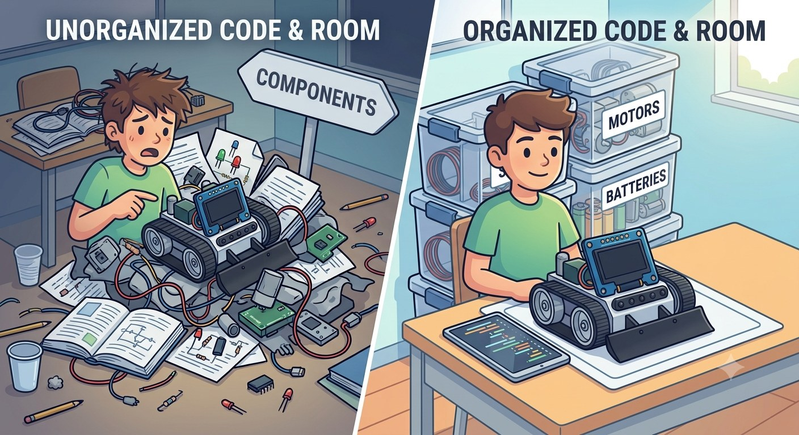
Same parts. Same student. The only difference is that everything has a labeled place to live. That is what splitting your code into files does.
Look back at your Lesson 6 program. It has hardware objects, configuration constants, helper functions, setup code, and loop code—all in one file. It works, but it's starting to get hard to navigate. And here's the problem: your programs are only going to get bigger from here.
❌ BEFORE (Lesson 6)
One file, 150+ lines:
Hardware objects at top
Constants scattered throughout
Functions everywhere
Hard to find anything
"Where was that wheel diameter constant?"
✅ AFTER (Lesson 7)
Eight organized files:
main.cpp — just the behavior: what the robot does
RobotConfig.h — every tunable number, in one place
RobotSensors.h / .cpp — the hardware objects, created exactly once
RobotHelpers.h / .cpp — the STANDARD HELPERS, moved out of main at last
RobotMotion.h / .cpp — the movement functions
🤖 Real-World Connection
Professional programmers don't put everything in one file—they organize code into separate files, each with a specific purpose. It's like having a dresser for clothes, a bookshelf for books, and a desk organizer for school supplies.
Tesla's Autopilot — Millions of lines across thousands of files
Video games — Separate files for graphics, physics, audio, AI
Your phone apps — Hundreds of organized source files
Today, you'll learn to organize code like a professional!
NOTE
Think About It: The Kitchen Analogy
Code organization is like running a restaurant kitchen:
Header files (.h) = Recipe cards — they list WHAT dishes exist and WHAT ingredients they need
Implementation files (.cpp) = The actual cooking — HOW to prepare each dish step-by-step
main.cpp = The head chef calling out orders — "Make a Caesar salad! Now make garlic bread!"
As you work through this lesson, keep asking: "Is this a recipe (declaration) or the cooking steps (implementation)?"
☐ Explain the difference between a header file (.h) and an implementation file (.cpp)
☐ Explain the difference between a declaration (a promise) and a definition (keeping it)
☐ Use #include to connect files, and say when to use <angle brackets> and when to use "quotes"
☐ Use #pragma once and say what problem it does — and does not — solve
☐ Use extern to share one hardware object across eight files
☐ Split your Lesson 6 program into the eight-file architecture and keep it building green at every step
☐ Read a linker error and tell it apart from a compiler error
☐ Tune your whole robot by changing two numbers in RobotConfig.h
☐ Navigate a multi-file project in PlatformIO (tabs, Go to Definition, Peek)
NOTE
This lesson might feel different—less "robot doing cool stuff" and more "organizing code." But trust me: the organization skills you learn today will make every future lesson easier. In Lesson 8, you'll add line following. Because of today's work you won't build anything new to do it—the line-sensor code drops straight into the RobotSensors pair you are about to create, using the same pattern.
NOTE
Eight files sounds like a lot. You are not memorizing eight files today — you are learning one pattern (declare it in the header, define it in the .cpp) that repeats eight times. Learn the pattern once and the file count stops mattering.
Before we dive into the "how," let's understand the "why." Here are the real-world benefits:
NOTE
It's Not Just About Neatness!
Poor organization doesn't just make code hard to read—it causes real errors. "Spaghetti code" with duplicated variables and functions across files leads to compiler errors like:
error: multiple definition of 'WHEEL_DIAMETER'error: 'driveDistance' was not declared in this scope
Proper organization prevents these errors. The techniques in this lesson aren't just "nice to have"—they're essential!
Benefit
Without Organization
With Organization
Finding code
Scroll through 200 lines
Open the right file, it's right there
Calibrating robot
Hunt for scattered constants
Open RobotConfig.h, change one number
Reusing code
Copy-paste and hope for the best
Copy the file to your next project
Team projects
Everyone edits the same file = conflicts
Each person works on different files
Debugging
"The bug is somewhere in these 200 lines"
"The bug is in RobotMotion.cpp"
See the Difference: Before vs. After
Let's look at a real example. Here's the same robot behavior written two ways:
❌ BEFORE: Everything in loop()
void loop() {
// Drive forward 30cm
encoders.getCountsAndResetLeft();
encoders.getCountsAndResetRight();
int target = 30 * 74.3;
motors.setSpeeds(150, 150);
while (abs(encoders.getCountsLeft()) < target) {
delay(10);
}
motors.setSpeeds(0, 0);
delay(500);
// Turn right 90 degrees
encoders.getCountsAndResetLeft();
encoders.getCountsAndResetRight();
int turnTarget = 90 * 5.5;
motors.setSpeeds(150, -150);
while (abs(encoders.getCountsLeft()) < turnTarget) {
delay(10);
}
motors.setSpeeds(0, 0);
delay(500);
// Drive forward 30cm again...// (same 10 lines repeated!)// Turn right 90 degrees again...// (same 8 lines repeated!)// ... and so on for 100+ lines
}
✅ AFTER: Organized with Functions
void loop() {
// Drive a square - so clean!for (int i = 0; i < 4; i++) {
driveDistance(30);
turnDegrees(90);
delay(500);
}
while(true) { }
}
// The complex code is hidden// in RobotMotion.cpp where it// belongs. loop() just describes// WHAT the robot does, not HOW.
NOTE
The "What vs. How" Principle
Good code organization separates WHAT your robot does from HOW it does it:
RobotMotion.cpp handles HOW: encoder math, motor control, timing
When you read driveDistance(30), you instantly know what the robot will do. You don't need to see the 10 lines of encoder code to understand the behavior!
NOTE
Functions, Behaviors, and Helpers
You'll hear several terms for the functions we write. Here's how to think about them:
Behavior functions — Make the robot do something: driveDistance(), turnDegrees(), followLine()
Helper functions — Support behaviors: showMessage(), readSensors(), calculateError()
Both are just functions — the names help us think about their purpose. In this course, we'll organize behaviors into modules like RobotMotion and hardware/sensor helpers into RobotSensors.
Best Practice: Naming Conventions
Consistent naming makes code easier to read. Here's what we use in this course:
What
Style
Example
Files
PascalCase
RobotMotion.h, RobotConfig.h
Functions
camelCase
driveDistance(), turnDegrees()
Constants
UPPER_SNAKE_CASE
WHEEL_DIAMETER_MM, DRIVE_SPEED
Variables
camelCase
targetCounts, leftSpeed
3.2 The Two Types of Files
In C++ (the language your Zumo uses), code is organized into two types of files that work together as a pair:
KEY TERM: Header Files (.h)
Declarations: "What exists." Like a restaurant menu that lists what's available.
KEY TERM: Implementation Files (.cpp)
Definitions: "How it works." Like the kitchen where the food is actually made.
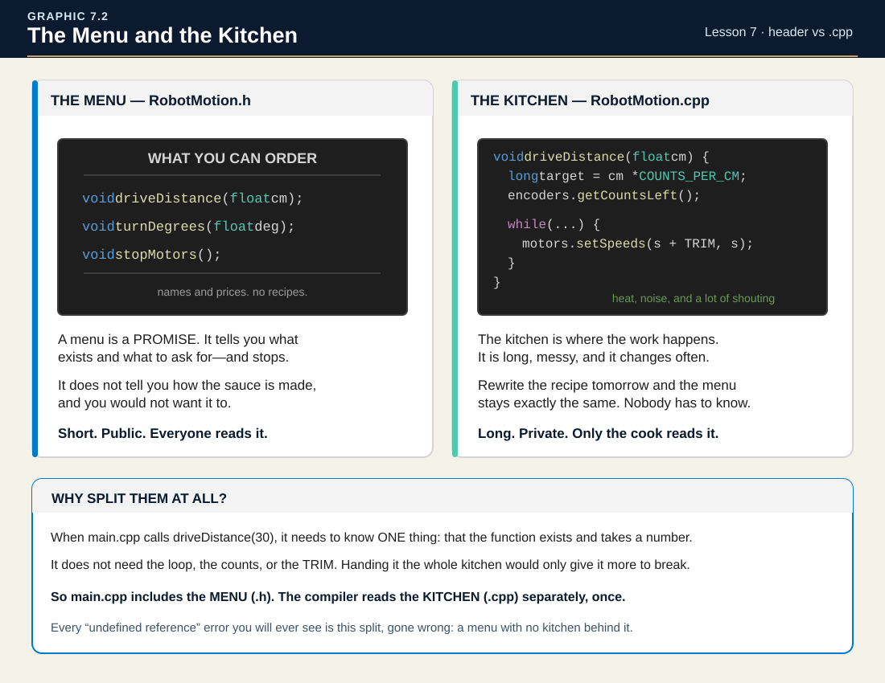
As a customer (or another part of your code), you only need to see the menu. You don't need to know how the kitchen works—you just need to know what you can order.
3.3 Header Files (.h) in Detail
A header file is like a table of contents or a list of promises. It tells the rest of your program: "These things exist, and here's how to use them."
A header file typically contains:
Function declarations — The function name, parameters, and return type (but NOT the code inside)
Constants — Values that don't change, like wheel diameter
Include guards — Special lines that prevent errors (more on this soon)
Here's what a simple header file looks like:
// RobotMotion.h - Header file for movement functions#pragma once
// Function declarations (promises)void driveDistance(float centimeters);
void turnDegrees(float degrees);
WARNING
Critical: Semicolons!
Notice that declarations end with a semicolon, not curly braces. In the .cpp file, functions have { code } with code inside. In the .h file, they end with just ; — it's a promise, not the actual implementation.
3.4 Implementation Files (.cpp) in Detail
The implementation file is where the real work happens. It contains the actual code that makes your functions do their jobs.
An implementation file typically contains:
#include statements — To connect to header files
Function definitions — The full code for each function
Private helper code — Stuff used internally but not advertised in the header
// RobotMotion.cpp - Implementation of movement functions#include <Zumo32U4.h>
#include"RobotConfig.h"#include"RobotSensors.h"#include"RobotMotion.h"// Function definition (the actual code)void driveDistance(float centimeters) {
encoders.getCountsAndResetLeft();
encoders.getCountsAndResetRight();
int targetCounts = abs(centimeters) * COUNTS_PER_CM;
int speed = (centimeters > 0) ? DRIVE_SPEED : -DRIVE_SPEED;
motors.setSpeeds(speed, speed);
while (abs(encoders.getCountsLeft()) < targetCounts) {
delay(10);
}
motors.setSpeeds(0, 0);
}
Notice the #include "RobotMotion.h" at the top. This connects the implementation file to its header file. It's saying: "I'm going to fulfill the promises made in RobotMotion.h."
3.5 The #include Directive
You've been using #include since Lesson 1, but let's understand exactly what it does.
KEY TERM: #include
A directive that literally copies and pastes the entire contents of a file into your code at that spot. It's like saying: "Take everything from that file and put it right here."
3.6 Preventing Double Includes: The "Double Menu" Problem
Here's a tricky problem: what happens if your code accidentally includes the same header file twice?
Imagine a waiter reading the same menu page twice to a customer. "We have burgers, fries, milkshakes. We have burgers, fries, milkshakes." The customer would be confused: "Wait, do you have TWO types of burgers? Are they different?"
The compiler has the same problem. If it sees the same declarations twice, it gets confused and throws an error: "You already declared driveDistance! Why are you declaring it again?"
The fix is simple — add one line at the very top of every header file:
KEY TERM: #pragma once
A compiler directive that says: "Only include this file once, even if someone tries to include it multiple times." Put it at the very top of every .h file.
#pragma once
// Your declarations go herevoid driveDistance(float centimeters);
That's it. One line, problem solved. The compiler remembers it already included this file and skips it the second time.
NOTE
The Old Way (Include Guards)
In older codebases, you'll see a three-line pattern called "include guards" that does the same thing:
This works fine but is more verbose and error-prone (typos in the guard name cause hard-to-find bugs). #pragma once is the modern standard — supported by every compiler you'll encounter (GCC, Clang, MSVC). If you see include guards in someone else's code, now you know what they do.
3.7 Understanding Variable Scope: Where Can Your Variables "See"?
KEY TERM: Scope
Determines where in your code a variable can be accessed. A variable only exists within its scope—try to use it outside, and the compiler says "undeclared identifier."
LEARN: The Backpack Analogy
Think of variables like items you carry around school:
Type
Analogy
In Code
Global Variables
🏫 Items in the classroom — everyone can see and use them
Declared outside all functions, at the top of your file
Local Variables
🎒 Items in your pocket — only you can access them
Declared inside a function, only exist within that function
Example — spot the difference:
// GLOBAL variable — declared outside any functionint robotSpeed = 200; // Everyone can see this!void setup() {
Serial.begin(115200);
}
void driveForward() {
// LOCAL variable — only exists inside this functionint turnAmount = 50; // Only driveForward() can see this
motors.setSpeeds(robotSpeed + turnAmount, robotSpeed - turnAmount);
// ✅ robotSpeed works — it's global// ✅ turnAmount works — we're inside driveForward()
}
void loop() {
driveForward();
Serial.println(robotSpeed); // ✅ Works — robotSpeed is global
Serial.println(turnAmount); // ❌ ERROR! turnAmount doesn't exist here
}
WARNING
The #1 Scope Mistake
When you move code into a new function or file, you might see this error:
error: 'turnAmount' was not declared in this scope
This means: You're trying to use a variable that doesn't exist where you're trying to use it.
Common fixes:
Move the variable declaration to global scope (top of file)
Pass the variable as a parameter to the function
Declare the variable in the file/function where you need it
NOTE
When to Use Global vs. Local
Use Global When...
Use Local When...
Multiple functions need the same value
Only one function uses the value
The value persists across loop() cycles
The value is temporary/calculated fresh each time
Examples: robotSpeed, Kp, currentState
Examples: i in a for-loop, temporary calculations
3.8 PlatformIO Project Structure
PlatformIO organizes projects in a specific way. Understanding this structure will help you know where to put your new files.
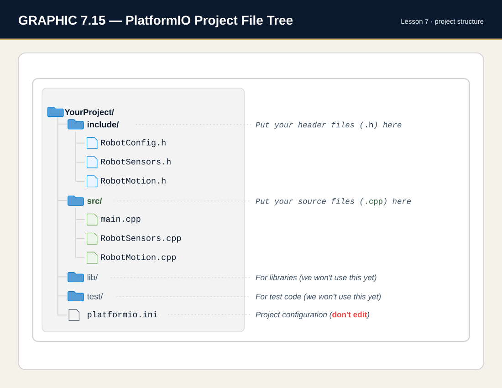
[IMAGE 7.3] PlatformIO project folder structure in VS Code Explorer panel
NOTE
When you #include a file with quotes (like "RobotMotion.h"), PlatformIO automatically searches both the src/ and include/ folders. You don't need to specify the folder path!
TIP
Common Pitfalls — Lesson 7
"Undeclared identifier" after moving code: You moved a function to a new file but the variable it uses is still local to the old file. Either make it global or pass it as a parameter.
Missing #include: New .h file? You must #include "filename.h" in any file that uses it.
Circular includes: File A includes File B, which includes File A = infinite loop. #pragma once prevents this automatically.
Vocabulary Reference
KEY TERM: Header file (.h)
A file that declares what exists (functions, constants) without the implementation code.
KEY TERM: Implementation file (.cpp)
A file that contains the actual code for functions.
KEY TERM: Include guard
An older technique (#ifndef/#define/#endif) that prevents a file from being included twice. Modern code uses #pragma once instead.
KEY TERM: Declaration
Telling the compiler "this function exists" — ends with a semicolon.
KEY TERM: Definition
The actual code that makes a function work — has curly braces with code inside.
KEY TERM: Refactoring
Reorganizing existing code without changing what it does.
KEY TERM: Scope
Determines where in your code a variable can be accessed. Global scope means accessible everywhere; local scope means only within the function where it's declared.
extern declarations for all seven hardware objects
RobotSensors.cpp
src/
Hardware home
The one real definition of each of the seven objects
RobotHelpers.h
include/
Helper promises
Declarations for waitForStart() and checkBattery()
RobotHelpers.cpp
src/
Helper code
The two STANDARD HELPERS, moved out of main.cpp
RobotMotion.h
include/
Movement promises
Declarations for driveDistance() and turnDegrees()
RobotMotion.cpp
src/
Movement code
The full encoder-driven implementations, TRIM and averageCounts() included
When Would I Use This?
Scenario
Which File to Edit
Need to calibrate for a competition?
RobotConfig.h — all your numbers are in one place
Need to fix how turning works?
RobotMotion.cpp — that's where the movement logic lives
Need to change what your robot does?
main.cpp — that's where your high-level behavior is
Robot #2 has different wheel size?
Copy project, edit only RobotConfig.h
Teammate wants to add sensors?
They create RobotSensors.h/.cpp, you keep working
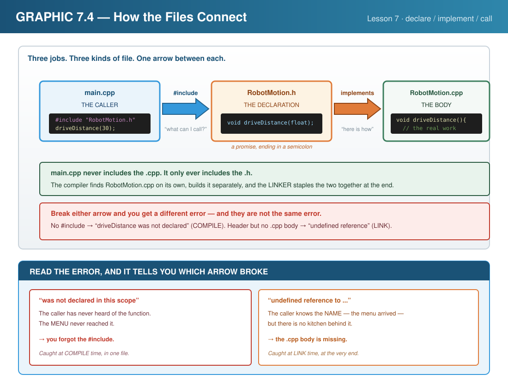
4.1 Set Up Your Project
DO THIS NOW — Start a New Lesson (same ritual as always)
Open the ZUMO Project Maker → confirm Lesson 07 — Main lesson build, click Download.
Unzip and drag the LastName_L07 folder into Documents/PlatformIO/Projects.
VS Code: File → Open Folder → your new folder — and this once, also keep Lesson 6's folder open in a second window (File → New Window → open it there). Today's build raids it for parts.
Check the header comment the Maker pre-filled, then Build (✓).
No internet? Copy your ZUMO_Template, rename it LastName_L07 by hand — helpers included, from any Lesson 4+ project.
Before you build anything, it helps to see the whole shape of what you're about to create. This lesson splits one big program into eight small files, each with a single job. This section is the map; Section 6 is the construction.
5.1 The Eight-File Architecture
A well-organized Zumo project keeps related code together and separates the things that change often from the things that don't. Here's how the eight files connect:
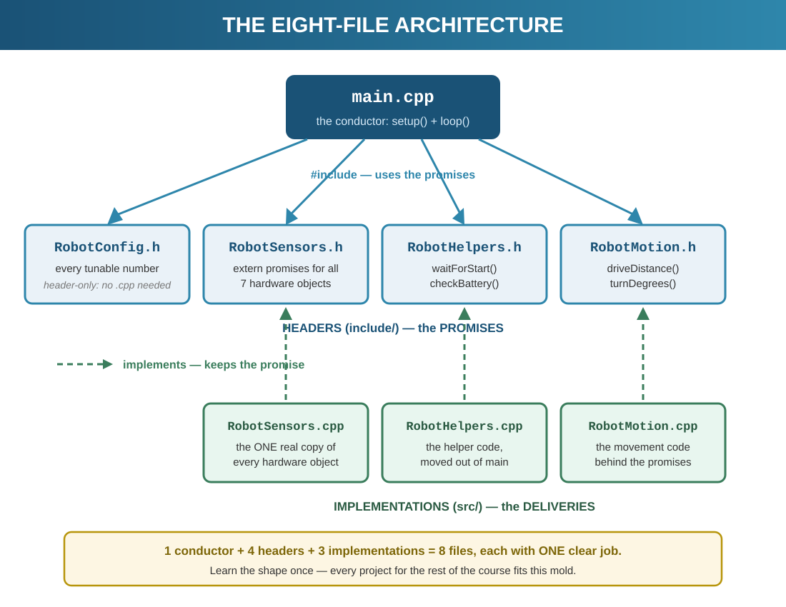
5.2 What Each File Is Responsible For
Every file has one clear job. If you're ever unsure where a piece of code belongs, this table is the answer:
File
Type
Holds
main.cpp
Program
setup() and loop() — the high-level story of what the robot does.
extern declarations for shared hardware objects (display, motors, encoders, buzzer).
RobotSensors.cpp
Implementation
The one real definition of each hardware object.
RobotHelpers.h
Header
Declarations for the two STANDARD HELPERS — waitForStart(), checkBattery().
RobotHelpers.cpp
Implementation
The helper code itself — moved out of main.cpp at last.
RobotMotion.h
Header
Function declarations — driveDistance(), turnDegrees().
RobotMotion.cpp
Implementation
The actual movement code behind those declarations.
Header vs Implementation
A header (.h) is a promise — it announces "this function/object exists" so other files can use it. The implementation (.cpp) is the delivery — the real code. You met this idea in the Theory section; here you'll see it in action across the project.
5.3 Function & Constant Reference
These are the pieces you'll create. Keep this handy while you build in Section 6:
Name
Lives in
Purpose
driveDistance(cm)
RobotMotion
Drive a precise distance in centimeters using encoder counts.
turnDegrees(deg)
RobotMotion
Rotate the robot a precise number of degrees.
COUNTS_PER_CM
RobotConfig
Encoder counts per centimeter — the calibration that makes distance accurate.
DRIVE_SPEED
RobotConfig
Default motor speed for driving moves.
BATTERY_GOOD
RobotConfig
Minimum acceptable battery reading for the startup check.
INSIGHT
This eight-file layout isn't just for this lesson — it's the architecture you'll reuse for the rest of the course. Every future lesson drops new constants into RobotConfig.h and new movements into RobotMotion. Learn the shape once, and every project after this fits the same mold.
BRAIN CHECK 01 · MENTAL KNOWLEDGE CHECK — Answer From Your Head
That is the reading done — Sections 1 through 5. Before you split a single file, answer these five from your head: no scrolling back, no editor open. Then click to compare. If your answer and the reveal disagree, the section number tells you where to re-read.
1. A declaration ends with one particular piece of punctuation. Which one — and what does it tell the compiler? (§3.3)
A semicolon, not curly braces. The semicolon is what makes the line a promise: it says this function exists and here is how to call it, but the code lives somewhere else. Swap in curly braces and you have written a definition instead — the actual work — which is why putting one in a header that several files include produces “multiple definition” later.
2. Name the three kinds of thing that belong in a .cpp file. (§3.4)
#include statements that connect it to the headers it needs; function definitions, meaning the full code behind each promise; and private helper code that nothing outside the file needs to know about. The .h says what exists, the .cpp says how it works.
3. Where is a global variable declared, and where is a local one? (§3.7)
A global is declared outside every function, at the top of the file — the classroom, where anyone can reach it. A local is declared inside a function and exists only there — your pocket. Reach for a local from outside its function and the compiler tells you it was never declared, which is the same message you get for a missing #include and a different cause.
4. Poor organization is not just untidy. Name one compiler error it actually causes. (§3.1)
Either multiple definition of 'WHEEL_DIAMETER' — the same constant defined in two files that meet at link time — or 'driveDistance' was not declared in this scope, where the file calling it never got the header that promises it. Both are organization failures wearing a compiler's vocabulary.
5. How many files does this lesson split the program into, and what decides what goes in each? (§5.1, §5.2)
Eight, and the rule is one clear job per file. If you cannot say in a sentence what a file is responsible for, the code is in the wrong place. That single-job test is what you will use in Section 6 every time you decide where a new line belongs.
Section 6 · Build ItSplitting One File Into Eight
Section 5 drew the map of the eight-file architecture. Now you build it — and this lesson changes the rules: nobody hands you a plan anymore. Each step gives you a goal; you write the plan, then the code. This is how the rest of the book works, so the habit starts here.
NOTE
HOW THIS SECTION WORKS — the plan is yours now
📖 Explanation — what this file is for and why it exists
🎯 The goal — what the file must accomplish. No pseudo-code provided.
📝 MY PLAN — open main.cpp and write your plan into the MY PLAN block the Maker stamped at the top. Plain English, numbered. This block is part of your grade — it shows your thinking, and it's the first thing to check when your build goes sideways.
⌨️ Build from YOUR plan — the hints point at the Quick Reference; the thinking is yours
🔓 Compare — the reveal shows a worked version. Different code with the same behavior is a win. Then ask: did the code match your plan? If not, which one was right?
✅ Build green before moving on
Two steps break the pattern:Step 4 stages a deliberate red build — a brand-new linker error you need to meet on purpose — and Step 8's tuning-mode loop is test-harness choreography you copy.
Fell behind? File wrecked? The Maker has your back.
The ZUMO Project Maker has a CATCH-UP menu for this lesson: pick the entry named for the step you're about to start, and it opens a project — all files included — built up to that exact point. Grab the right entry and keep moving.
📋 WHAT YOU NEED
VS Code with PlatformIO installed
Zumo 32U4 robot connected via USB
Your finished Lesson 6 project open in a second window (you'll be raiding it)
Open floor space for tuning runs
Step 1 — Make Your Project
Same ritual, new habit: → make LastName_L07 for me, unzip into Documents → PlatformIO → Projects, File → Open Folder. You get the standard single-file skeleton — main.cpp with the STANDARD HELPERS inside it, one last time. By Step 5 they'll have moved out.
CHECKPOINT
Build (✓) green on the untouched skeleton. Keep your Lesson 6 project open in a second VS Code window — Steps 2, 6, and 7 raid it for parts.
Step 2 — RobotConfig.h: One Home for Every Number
Right-click the include folder in the Explorer panel → New File → name it exactly RobotConfig.h. Capital R, capital C, .h — spelling is law in include-land. House rule from Section 3.8: headers live in include/, source files in src/. PlatformIO searches both automatically.
THE GOAL
Every tunable number from Lesson 6 lives in this one file: the four distance constants, the three turning constants, the speeds, your TRIM — plus two new battery thresholds (BATTERY_GOOD = 4800, BATTERY_LOW = 4200). Top of the file: a banner comment saying what it's for, then the one guard line that stops double-include trouble.
MY PLAN — yours, before any code
List, from your open Lesson 6 project, exactly which const lines migrate here. Group them the way Section 5.2 groups responsibilities: physical, turning, speed, battery.
🧭 Hints, not answers: the guard line is in ⚡ Quick Reference → Includes & Guards; your Lesson 6 CONFIGURATION section has every constant. One new speed: TURN_SPEED splits off from DRIVE_SPEED — same value today, tunable separately forever after.
🔓 Compare with a worked RobotConfig.h
/*=====================================================ROBOTCONFIG.H - Robot Calibration Settings=====================================================All robot-specific values in ONE place!Edit this file to tune your robot's performance.=====================================================*/#pragma once// ===== PHYSICAL PROPERTIES =====// These values define your robot's hardware// Encoder counts per complete wheel rotation// (12 counts/motor rotation x 75.81 gear ratio = 909.7)constfloat COUNTS_PER_ROTATION = 909.7;
// Wheel diameter in millimeters (measure yours!)constfloat WHEEL_DIAMETER_MM = 39.0;
// Wheel circumference = pi x diameterconstfloat WHEEL_CIRCUMFERENCE_MM = 3.14159 * WHEEL_DIAMETER_MM;
// Encoder counts per centimeter of travelconstfloat COUNTS_PER_CM = COUNTS_PER_ROTATION / (WHEEL_CIRCUMFERENCE_MM / 10.0);
// ===== TURNING PROPERTIES =====// Distance between wheel centers - this is a CALIBRATION value!// Start at 85.0 (physical measurement), then tune up until 90 degree// turns are accurate. Typical tuned values: 98-115 depending on// surface and wheel wear.constfloat WHEEL_BASE_MM = 85.0;
// Circumference of the turn circleconstfloat TURN_CIRCUMFERENCE_MM = 3.14159 * WHEEL_BASE_MM;
// Encoder counts per degree of rotationconstfloat COUNTS_PER_DEGREE = (TURN_CIRCUMFERENCE_MM / 360.0) *
(COUNTS_PER_ROTATION / WHEEL_CIRCUMFERENCE_MM);
// ===== SPEED SETTINGS =====// Adjust these to change robot behaviorconstint DRIVE_SPEED = 150; // Speed for straight driving (0-400)constint TURN_SPEED = 150; // Speed for turning (0-400)// Remember TRIM? It lived at the top of main.cpp,// buried in a 200-line file. This is where it always belonged:// a robot-specific number, in the robot-specific numbers file.// (It was born in Lesson 3, spent in Lesson 6, and filed here.)constint TRIM = 0; // <-- YOUR NUMBER// ===== BATTERY THRESHOLDS =====constint BATTERY_GOOD = 4800; // millivolts - fully chargedconstint BATTERY_LOW = 4200; // millivolts - charge soon
CHECKPOINT
Build (✓). Green even though nothing includes the file yet — headers only matter once they're invited. Then add #include "RobotConfig.h" below the Zumo include in main.cpp (quotes, not angle brackets: your file, not the library's) and build again. Still green.
Step 3 — RobotSensors.h: The extern Promise
New file in include/: RobotSensors.h. This one holds the lesson's big idea. Seven hardware objects need to be usable from every file — but created only once. The header's job is the promise, not the object: extern means "this exists somewhere else; let me use it here."
THE GOAL
Banner, guard line, the library include — then an extern declaration for all seven hardware objects: display, buzzer, motors, encoders, and all three buttons. Promises only. Nothing is created in this file.
MY PLAN — yours, before any code
Write the seven object types and names before you type a line — Section 5.3's table has the full cast. Then note in one sentence: why does this file need #include <Zumo32U4.h> when RobotConfig.h didn't?
🧭 Hints, not answers: the extern pattern is one line per object in ⚡ Quick Reference → The extern Pattern. The include question: a file that names Zumo types has to be told what those types are.
🔓 Compare with a worked RobotSensors.h
/*=====================================================ROBOTSENSORS.H - Hardware & Sensor Declarations=====================================================Declares ALL hardware objects used across the project.The actual objects are DEFINED in RobotSensors.cpp.The keyword "extern" means: "this object existssomewhere else - let me use it here."=====================================================*/
#pragma once
#include <Zumo32U4.h>
// ===== EXTERN HARDWARE DECLARATIONS =====// These tell other files "these objects exist"// The actual objects are created in RobotSensors.cpp
extern Zumo32U4OLED display;
extern Zumo32U4Buzzer buzzer;
extern Zumo32U4Motors motors;
extern Zumo32U4Encoders encoders;
extern Zumo32U4ButtonA buttonA;
extern Zumo32U4ButtonB buttonB;
extern Zumo32U4ButtonC buttonC;
CHECKPOINT
Add #include "RobotSensors.h" to main.cpp, build (✓). Green — and here's the strange part: main.cpp still creates its own buttonA, buttonB, and display, and the compiler doesn't mind. A promise plus the real thing in the same file is legal. Two real things is not — which is Step 4's whole show.
Step 4 — RobotSensors.cpp: One True Home (and a New Kind of Red)
New file — and note the folder change: .cpp files go in src/, next to main.cpp. Create RobotSensors.cpp there. The promises in the header need keeping — this file creates all seven objects, exactly once, for the whole project.
THE GOAL
Banner, both includes (the library and its own header), then the seven real object definitions, no extern. Three of them — display, buttonA, buttonB — are the lines main.cpp has now. The other four (buzzer, motors, encoders, buttonC) are new here, because from now on the whole project shares one set.
MY PLAN — yours, before any code
Predict in writing before you build: main.cpp still defines buttonA, buttonB, and display. RobotSensors.cpp is about to define them again. What happens?
TIP
DELIBERATE RED BUILD — meet the linker
Create the file, keep main.cpp untouched, and build. It goes red — but look closely: this is a new species of error. No line number in your code. No "expected ;". Instead:
multiple definition of `display'
RobotSensors.cpp.o (.bss.display+0x0): first defined here
The compiler was happy — each file made sense alone. The linker, whose job is welding the compiled pieces into one program, found two real display objects and refused to guess. Section 8's Error 5 is this exact message. The fix: delete the HARDWARE OBJECTS block from main.cpp — the header's promises now point at RobotSensors.cpp's real things.
🔓 Compare with a worked RobotSensors.cpp
/*=====================================================ROBOTSENSORS.CPP - Hardware Definitions=====================================================This file CREATES all hardware objects.This is the ONLY file that creates them.Other files use #include "RobotSensors.h" to access them.In later lessons, sensor functions will be added here.=====================================================*/
#include <Zumo32U4.h>
#include "RobotSensors.h"// ===== HARDWARE OBJECT DEFINITIONS =====// These are the REAL objects - created exactly ONCEZumo32U4OLED display;
Zumo32U4Buzzer buzzer;
Zumo32U4Motors motors;
Zumo32U4Encoders encoders;
Zumo32U4ButtonA buttonA;
Zumo32U4ButtonB buttonB;
Zumo32U4ButtonC buttonC;
CHECKPOINT
Delete main.cpp's hardware block, build (✓) — green, and your project just crossed a line: main.cpp uses hardware it no longer owns. That's the extern pattern working.
Step 5 — RobotHelpers.h / .cpp: The Warm-Up Split
Two files this step — a complete .h/.cpp pair, one in each folder (RobotHelpers.h in include/, RobotHelpers.cpp in src/) — on code you know by heart: waitForStart() and checkBattery() have shipped with every project since Lesson 4. Zero new logic. Pure structure practice, on purpose: the split decision is the skill.
THE GOAL
RobotHelpers.h carries the two promises; RobotHelpers.cpp carries the code, copied from your main.cpp. The .cpp needs to reach the display and buttons — decide which include buys that access.
MY PLAN — yours, before any code
For each of the two helpers, write which lines are the promise (header) and which are the keeping (cpp). Then: which STANDARD HELPER lines in main.cpp become deletable, and what one line replaces them all?
🧭 Hints, not answers: the split rule is ⚡ Quick Reference → What Goes Where; hardware access comes from including RobotSensors.h. And you already know from Step 4 what happens if the old copies stay behind in main.cpp — no walkthrough this time.
🔓 Compare with worked RobotHelpers files
/*=====================================================ROBOTHELPERS.H - Standard Helper Declarations=====================================================The two helpers that have shipped with every projectsince Lesson 4. The code is in RobotHelpers.cpp -these lines just promise it exists.=====================================================*/
#pragma once
// ===== HELPER DECLARATIONS =====void waitForStart();
void checkBattery();
/*=====================================================ROBOTHELPERS.CPP - Standard Helper Implementations=====================================================Same code you have used since Lesson 4 - it justlives in its own module now. Needs the hardware,so it includes RobotSensors.h.=====================================================*/
#include <Zumo32U4.h>
#include "RobotSensors.h"
#include "RobotHelpers.h"// ----- STANDARD HELPERS (added after Lesson 3) -----/*waitForStart()--------------SAFETY GATE: nothing moves until Button A is pressed.Call it at the END of setup(), always.*/void waitForStart() {
display.clear();
display.print(F("Press A"));
display.gotoXY(0, 1);
display.print(F("to start"));
buttonA.waitForButton();
display.clear();
delay(500); // time to get your hands clear
}
/*checkBattery()--------------Hold A + B together at any time to see the battery.Call it at the TOP of the polling loop.*/void checkBattery() {
if (buttonA.isPressed() && buttonB.isPressed()) {
display.clear();
display.print(F("Battery"));
display.gotoXY(0, 1);
int mv = readBatteryMillivolts();
display.print(mv);
display.print(F(" mV"));
while (buttonA.isPressed() || buttonB.isPressed()) {
// wait for release
}
delay(200);
display.clear();
}
}
CHECKPOINT
main.cpp shrinks to almost nothing: includes, an empty-ish setup() ending in waitForStart(), a loop() topped by checkBattery(). Build (✓). If it went red with multiple definition — you predicted that one yourself in Step 4.
Step 6 — RobotMotion.h: Promising the Moves
New file in include/: RobotMotion.h. The two functions that made Lesson 6 special — driveDistance() and turnDegrees() — get their public face here.
THE GOAL
Banner, guard, and the two function declarations — each with a short comment block saying what it does and what its parameter means, because this header is the documentation other files read. No code bodies.
MY PLAN — yours, before any code
Write the two declaration lines from memory first — return type, name, parameter type. Check against your Lesson 6 prototypes only after.
🧭 Hints, not answers: declaration anatomy is in ⚡ Quick Reference → What Goes Where — a declaration is a prototype that moved into a header.
🔓 Compare with a worked RobotMotion.h
/*=====================================================ROBOTMOTION.H - Movement Function Declarations=====================================================This file DECLARES the movement functions.The actual code (implementation) is in RobotMotion.cpp=====================================================*/
#pragma once
// ===== FUNCTION DECLARATIONS =====// These tell the compiler "these functions exist"// The actual code is in RobotMotion.cpp/*driveDistance()----------------Drives the robot a specific distance.Parameters: centimeters - Distance to travel (positive = forward)Uses encoders for accurate distance control.*/void driveDistance(float centimeters);
/*turnDegrees()--------------Turns the robot a specific angle.Parameters: degrees - Angle to turn (positive = right, negative = left)Uses encoders for accurate turn control.*/void turnDegrees(float degrees);
CHECKPOINT
Include it in main.cpp, build (✓). Green — declarations without definitions are legal until something calls them. Sound familiar? It's the prototype rule from Lessons 4–6, wearing a file extension.
Step 7 — RobotMotion.cpp: Keeping the Promise
Last module file, in src/: RobotMotion.cpp, home of the actual movement code — raided straight from your Lesson 6 project, with one upgrade.
THE GOAL
Three includes (which three? — that's a plan question), then both function bodies from Lesson 6 — including averageCounts() and the TRIM you spent in Step 13. They come across unchanged. The upgrade: turning uses the new TURN_SPEED constant instead of DRIVE_SPEED, so drive pace and turn pace tune independently from RobotConfig.h.
MY PLAN — yours, before any code
Answer in the plan block before typing: this file calls encoder functions, reads COUNTS_PER_CM, and must match its own declarations — name the include that satisfies each of those three needs.
🧭 Hints, not answers: stuck on the three? ⚡ Quick Reference → Includes & Guards has the map. The bodies are your Lesson 6 code — copying your own verified work between projects is engineering, not cheating.
🔓 Compare with a worked RobotMotion.cpp
/*=====================================================ROBOTMOTION.CPP - Movement Function Implementations=====================================================This file IMPLEMENTS the movement functionsdeclared in RobotMotion.h=====================================================*/#include <Zumo32U4.h>#include "RobotConfig.h"#include "RobotSensors.h"#include "RobotMotion.h"// ===== FUNCTION IMPLEMENTATIONS =====/*averageCounts()---------------From Lesson 6. How far have we gone? Ask BOTH wheels, not one.It is "static" because it belongs to this file alone - no otherfile needs it, so no other file gets to see it.*/staticlong averageCounts() {
long left = abs(encoders.getCountsLeft());
long right = abs(encoders.getCountsRight());
return (left + right) / 2;
}
void driveDistance(float centimeters) {
// Reset encoders to start counting from zero
encoders.getCountsAndResetLeft();
encoders.getCountsAndResetRight();
// Calculate how many encoder counts we needint targetCounts = abs(centimeters) * COUNTS_PER_CM;
// Set motor direction based on positive/negative distanceint speed = (centimeters > 0) ? DRIVE_SPEED : -DRIVE_SPEED;
// TRIM keeps it STRAIGHT (Lesson 3). Encoders count rotation -// they cannot tell you the robot curved. Without TRIM: an ARC.
motors.setSpeeds(speed + (speed > 0 ? TRIM : -TRIM), speed);
// Keep driving until we reach the target - AVERAGE both wheelswhile (averageCounts() < targetCounts) {
delay(10); // Small delay to prevent hogging the CPU
}
// Stop!
motors.setSpeeds(0, 0);
}
void turnDegrees(float degrees) {
// Reset encoders
encoders.getCountsAndResetLeft();
encoders.getCountsAndResetRight();
// Calculate target counts for the turnint targetCounts = abs(degrees) * COUNTS_PER_DEGREE;
// Set wheel directions for turning// Positive degrees = turn right (left wheel forward, right wheel backward)int leftSpeed = (degrees > 0) ? TURN_SPEED : -TURN_SPEED;
int rightSpeed = -leftSpeed; // Opposite direction// NO TRIM here - the wheels are fighting on purpose, and the// encoders decide the angle.
motors.setSpeeds(leftSpeed, rightSpeed);
// Keep turning until we reach the target - AVERAGE both wheelswhile (averageCounts() < targetCounts) {
delay(10);
}
// Stop!
motors.setSpeeds(0, 0);
}
CHECKPOINT
Build (✓). All eight files compile and link. Nothing calls the motion functions yet — main.cpp gets its new job next.
Step 8 — The New main.cpp (copy step)
With every job moved out, main.cpp becomes what it always should have been: the conductor. It includes the modules, reports the battery at boot, gates at waitForStart(), and runs a tuning-mode menu — A tests distance, B tests turns, C runs a full square. One Lesson 6 helper does not make the trip — displayEncoderCounts() was a diagnostic that proved your encoders counted true, and that job is done; the tuning menu is main.cpp’s new dashboard. The setup and loop below are boot-report and menu choreography, so this is a copy step. Replace your whole setup() and loop():
// ===== SETUP =====void setup() {
Serial.begin(115200);
unsignedlong serialStart = millis();
while (!Serial && (millis() - serialStart < 2000)) {
delay(10); // Wait up to 2s for USB serial connection
}
delay(500);
Serial.println(F("=== Lesson 7: Code Organization ==="));
// ===== BATTERY REPORT =====int batteryVoltage = readBatteryMillivolts();
int battWhole = batteryVoltage / 1000;
int battDecimal = (batteryVoltage / 10) % 100;
Serial.print(F("Battery: "));
Serial.print(battWhole);
Serial.print(F("."));
if (battDecimal < 10) Serial.print(F("0"));
Serial.print(battDecimal);
Serial.print(F("V ("));
Serial.print(batteryVoltage);
Serial.println(F("mV)"));
display.clear();
display.setLayout21x8();
display.print(F("===== Lesson 7 ====="));
display.gotoXY(0, 2);
display.print(F("Battery: "));
display.print(battWhole);
display.print(F("."));
if (battDecimal < 10) display.print(F("0"));
display.print(battDecimal);
display.print(F("V"));
display.gotoXY(0, 4);
display.print(F("Status: "));
if (batteryVoltage >= BATTERY_GOOD) {
display.print(F("GOOD"));
ledGreen(1);
} elseif (batteryVoltage >= BATTERY_LOW) {
display.print(F("LOW"));
ledYellow(1);
buzzer.playNote(NOTE_A(4), 200, 15);
} else {
display.print(F("CHARGE!"));
ledRed(1);
buzzer.playNote(NOTE_A(3), 500, 15);
}
display.gotoXY(0, 6);
display.print(F("Cts/cm: "));
display.print(COUNTS_PER_CM, 1);
display.gotoXY(0, 7);
display.print(F("Cts/deg: "));
display.print(COUNTS_PER_DEGREE, 2);
delay(2500);
ledGreen(0);
ledYellow(0);
ledRed(0);
waitForStart();
}
// ===== MAIN LOOP - TUNING MODE =====// A = test forward 10cm (tune WHEEL_DIAMETER_MM)// B = test turn 90 deg (tune WHEEL_BASE_MM)// C = full square with countdown (verify both)void loop() {
display.clear();
display.print(F("=== TUNING MODE ==="));
display.gotoXY(0, 2);
display.print(F("A = Forward 10cm"));
display.gotoXY(0, 3);
display.print(F("B = Turn 90 deg"));
display.gotoXY(0, 4);
display.print(F("C = Full square"));
while (true) {
checkBattery();
if (buttonA.getSingleDebouncedPress()) {
display.clear();
display.print(F("Forward 10cm..."));
delay(500);
driveDistance(10);
display.clear();
display.print(F("Done! A/B/C?"));
}
if (buttonB.getSingleDebouncedPress()) {
display.clear();
display.print(F("Turn 90 deg..."));
delay(500);
turnDegrees(90);
display.clear();
display.print(F("Done! A/B/C?"));
}
if (buttonC.getSingleDebouncedPress()) {
for (int count = 3; count > 0; count--) {
display.clear();
display.print(count);
buzzer.playNote(NOTE_C(5), 150, 15);
delay(1000);
}
display.clear();
display.print(F("GO!"));
buzzer.playNote(NOTE_C(6), 300, 15);
delay(500);
for (int i = 0; i < 4; i++) {
display.clear();
display.print(F("Side "));
display.print(i + 1);
display.print(F(" of 4"));
delay(500);
driveDistance(10);
delay(750);
turnDegrees(90);
delay(750);
}
display.clear();
display.print(F("Square done!"));
display.gotoXY(0, 2);
display.print(F("A/B/C?"));
}
delay(10);
}
}
WARNING
Robot on the floor before pressing anything after the gate
C runs a full square — a meter of clear space, hands clear
The power switch is your emergency stop
CHECKPOINT
Upload. Boot shows the battery report and your calibration numbers, then the gate. A drives 10 cm — measure it. B turns 90° — eyeball against a floor tile corner. C squares. Then the payoff run: open RobotConfig.h, nudge WHEEL_BASE_MM up 2–3, rebuild, B again. One number, one file, every turn in the project changes. That's why this architecture exists — Section 7 turns this into a full tuning workflow.
The moment of truth! Your organized code gives you a tuning mode to test and calibrate each movement individually.
🧪 TEST IT!
Upload the program to your robot (click the Upload arrow)
Verify the boot screen shows battery voltage, status, and both calibration values (Cts/cm, Cts/deg) — it holds for a couple of seconds
At the "Press A to start" gate: robot on the floor, hands clear, then press A
Verify the tuning mode menu appears (A/B/C options)
Press A — robot should drive forward ~10cm
Press B — robot should turn ~90° right
Press C — countdown 3-2-1, then robot drives a square!
FINAL CHECKPOINT
Code compiles without errors
Battery screen shows voltage and status on startup
Boot screen shows battery status and calibration values
Tuning mode menu shows A/B/C options
Button A: Robot drives forward ~10cm
Button B: Robot turns ~90° right
Button C: 3-2-1 countdown, then drives a square
Tuning Your Robot — The Payoff of RobotConfig.h
Your robot probably doesn't drive exactly 10cm or turn exactly 90° yet. That's normal! The values in RobotConfig.h are starting points based on physical measurements. Now you'll calibrate them to match your specific robot on your specific surface.
DO THIS NOW — Tune Forward Distance
Place a ruler or tape measure on your desk
Line up the robot's front edge at the 0cm mark
Press Button A — robot drives forward
Measure how far it actually went
If it went too far: increase WHEEL_DIAMETER_MM slightly (try 39.5)
If it went not far enough: decrease WHEEL_DIAMETER_MM (try 38.5)
Rebuild and press A again. Repeat until 10cm is accurate.
DO THIS NOW — Tune Turn Angle
Place the robot next to a straight edge (book, ruler)
Press Button B — robot turns right
Compare the angle to a right angle (corner of a book works!)
If it undershoots (less than 90°): increase WHEEL_BASE_MM (try 95, 100, 110...)
If it overshoots (more than 90°): decrease WHEEL_BASE_MM
Rebuild and press B again. Repeat until 90° is accurate.
INSIGHT: WHEEL_BASE_MM is a Calibration Value, Not a Ruler Measurement
You might measure 85mm between your wheels with a ruler, but the tuned value might be 110mm. That's normal! Wheel slip, friction, and surface texture all affect how the robot actually turns. The "correct" value is whatever makes 90° turns accurate on your surface. Typical tuned values range from 98–115mm.
DO THIS NOW — Verify with Full Square
Once both distance and turn feel close, press Button C
After the 3-2-1 countdown, the robot drives a full square
If it returns close to where it started — you're calibrated!
If it's off, fine-tune and try again
INSIGHT: THIS is Why We Organized Our Code
You just tuned your entire robot by editing two numbers in one file. Every function that uses those constants — driveDistance(), turnDegrees(), and the square demo — all updated automatically. Imagine hunting through 200 lines of spaghetti code to find every place these numbers appear!
Bonus: Try Changing DRIVE_SPEED
While you're in RobotConfig.h, try changing DRIVE_SPEED from 150 to 250. Rebuild and press A. Your robot drives the same 10cm — but faster. One number, one file, entire robot behavior changed. That's the power of organized code.
Navigating Your Multi-File Project
Now that you have multiple files, here are VS Code tips to navigate efficiently:
Using the Tab Bar
Open files appear as tabs at the top. Click a tab to switch between files. You can have all eight files open at once!
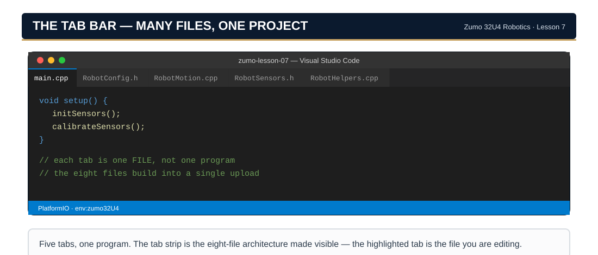
Go to Definition
Right-click on any function name (like driveDistance) and select "Go to Definition." VS Code will jump directly to where that function is implemented!
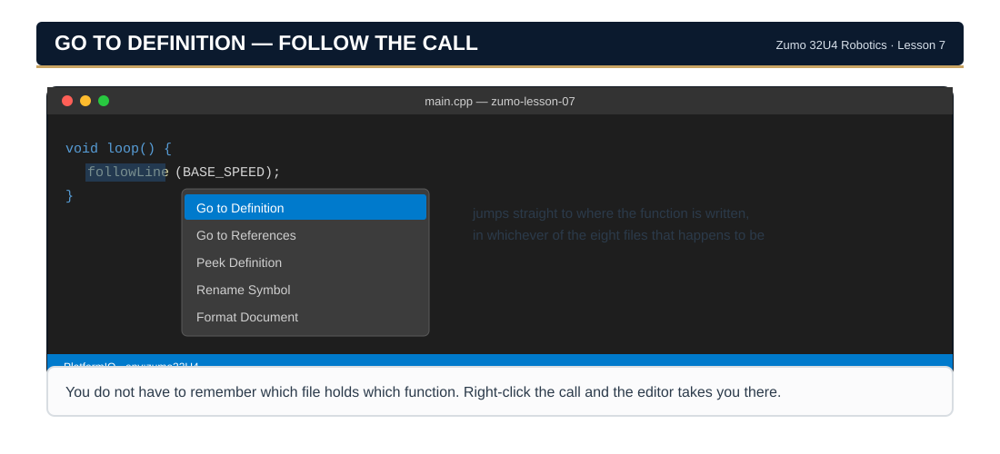
Peek Definition
Right-click and select "Peek Definition" (or press Alt+F12) to see the function code in a popup without leaving your current file.
TIP
Platform Shortcuts
Go to Definition shortcut:
Windows/Linux: Ctrl+Click on a function name
Mac: Cmd+Click on a function name
This is the fastest way to jump between your files!
🤖 How PlatformIO Builds Your Project
You might wonder: "How does PlatformIO know which files to compile?"
Answer: PlatformIO automatically compiles ALL .cpp files in src/ and makes ALL .h files in include/ available. No manual configuration needed!
Just put files in the right folders and PlatformIO handles the rest. 🎉
Section 8 · TroubleshootingThe Six Errors of Eight Files
Multi-file projects introduce new types of errors. Here are the most common problems and how to fix them.
Error 1: "was not declared in this scope"
error: 'driveDistance' was not declared in this scope
driveDistance(30);
^~~~~~~~~~~~~
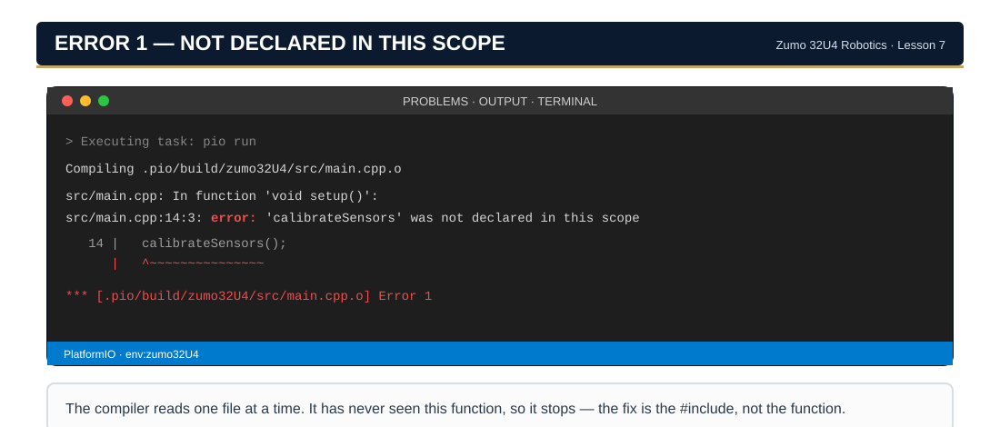
What it means
The compiler doesn't know that driveDistance() exists
Most likely cause
You forgot to #include the header file
The fix
Add #include "RobotMotion.h" at the top of main.cpp
Error 2: "multiple definition of"
multiple definition of `WHEEL_DIAMETER_MM'
first defined here...
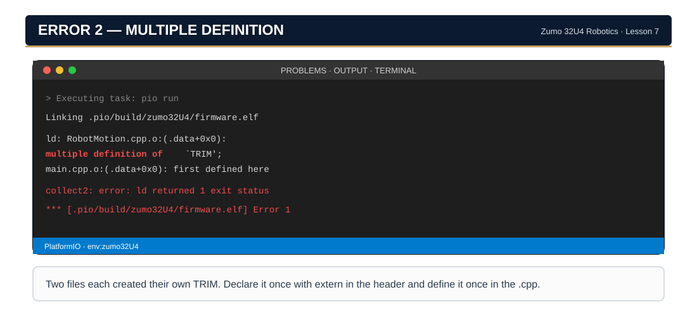
What it means
The linker found the same real variable created in more than one place.
Most likely cause
A header defines a variable instead of promising one — e.g. float WHEEL_DIAMETER_MM = 39.0; with no const. Every .cpp that includes it builds its own real copy.
The fix
Make it const. A const at the top of a header is private to each file that reads it, which is exactly what a constant wants. (That is why RobotConfig.h is nothing but const lines.)
⚠ Not the fix
#pragma once stops one .cpp from reading the same header twice. It cannot stop eight different files from each reading it once and each making a variable. Different problem, different tool.
Error 3: "No such file or directory"
fatal error: RobotMotion.h: No such file or directory#include"RobotMotion.h"
^~~~~~~~~~~~~~~
What it means
The compiler can't find the file you're trying to include
Check these
Typo in the filename? Spelling counts everywhere, and capitalization counts on some systems.
File outside include/ and src/? Those are the two folders PlatformIO searches — either one works, anywhere else does not.
Using <> instead of ""?
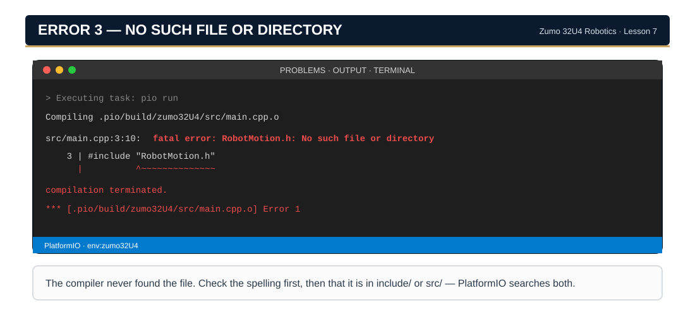
Error 4: "undefined reference to"
undefined reference to `driveDistance(float)'collect2: error: ld returned 1 exit status
What it means
The linker found the declaration but can't find the implementation
Check these
Does the .cpp file exist in src/?
Do the function signatures match exactly?
Did you #include the header in the .cpp file?
Error 5: "redefinition of" or "multiple definition of" hardware objects
multiple definition of `display'
RobotSensors.cpp:7: first defined here
multiple definition of `buzzer'
RobotSensors.cpp:8: first defined here
multiple definition of `encoders'
RobotSensors.cpp:10: first defined here
What it means
You created the same hardware object in multiple files — typically because you still have Zumo32U4OLED display; or Zumo32U4Motors motors; in main.cpp or RobotMotion.cpp from your old Lesson 6 code
The fix
Delete ALL hardware object lines from main.cpp and RobotMotion.cpp. They belong ONLY in RobotSensors.cpp. Other files access them via #include "RobotSensors.h" (which uses extern).
WARNING
This is the #1 most common error in this lesson!
If you copied code from Lesson 6, it probably had lines like:
Zumo32U4OLED display; // ← DELETE from main.cpp
Zumo32U4Buzzer buzzer; // ← DELETE from main.cpp
Zumo32U4ButtonA buttonA; // ← DELETE from main.cpp
Zumo32U4Motors motors; // ← DELETE from RobotMotion.cpp
Zumo32U4Encoders encoders; // ← DELETE from RobotMotion.cpp
In the eight-file structure, ALL seven hardware objects live in RobotSensors.cpp and nowhere else.
Error 5b: "undefined reference to 'motors'" (extern in wrong place)
undefined reference to `motors'
What it means
You accidentally wrote extern Zumo32U4Motors motors; in RobotSensors.cpp
Why it happens
extern means "this exists somewhere else." In the .cpp file, you need to create the object (no extern). extern only goes in the .h file.
The fix
In RobotSensors.cpp: Zumo32U4Motors motors; (no extern!) In RobotSensors.h: extern Zumo32U4Motors motors; (extern here!)
Error 6: "expected ';' before '{'"
error: expected ';' before '{' token
What it means
You put function code (with braces) in the .h file instead of just the declaration
The fix
Header files only get declarations ending in semicolons. Move the { code } to the .cpp file.
Quick Error Reference
Error Message
First Thing to Check
"not declared in this scope"
Missing #include statement
"multiple definition of"
Hardware objects in multiple .cpp files — should ONLY be in RobotSensors.cpp
"No such file or directory"
Typo in filename, or file in wrong folder
"undefined reference to"
Missing .cpp file, mismatched signatures, or accidental extern in .cpp file
"redefinition of"
Hardware objects in multiple .cpp files — delete from main.cpp and RobotMotion.cpp
"expected ';' before '{'"
Function body in .h file (should be in .cpp)
TIP
Test Functions Individually
When debugging multi-file projects, test one function at a time before combining them:
void loop() {
// Test just driveDistance first
Serial.begin(115200);
Serial.println(F("Testing driveDistance(30)..."));
driveDistance(30);
Serial.println(F("Done!"));
while(true) { }
}
Open the Serial Monitor (plug icon) to see the messages. This helps you isolate which function has a problem!
Robot Acting Strange? Check Batteries First!
WARNING
Low batteries cause unpredictable behavior — motors stall, sensors give bad readings, and the microcontroller may brownout. If your robot suddenly acts differently than before, check the battery screen at startup. If it shows LOW or CHARGE!, replace or recharge your batteries before debugging anything else.
Nothing Showing in Serial Monitor?
INFO: The ATmega32U4 uses native USB serial.
Unlike boards with a separate serial chip, Serial isn't ready until your computer opens the port. Messages sent before the connection is established are lost.
Fix 1 — the timing, which is what the sentence above is describing. Your setup() waits up to two seconds for the computer to open the port, and then gives up and carries on. If the Serial Monitor was not already open, the opening messages went out to a port nobody was listening to and they are gone. Close and reopen the Serial Monitor, then press the robot's reset button and watch it boot again.
Fix 2 — only if that did not do it. Open platformio.ini and check that monitor_speed still reads 115200, the value the book ships to go with Serial.begin(115200). If you have changed one of them, put it back — but note that they already agree in every file you were handed, so this is a check, not a likely cause.
Display Shows Huge Text (Only a Few Characters Visible)?
INFO: You're in 11×4 mode (big font) instead of 21×8 (small font).
The OLED has two layout modes. If you see only the first few characters of your text in huge letters, you're missing display.setLayout21x8().
Fix: Make sure your battery check starts with:
display.clear();
display.setLayout21x8(); // ← THIS LINE!
display.gotoXY(0, 0);
Without setLayout21x8(), the display defaults to 11×4 (large font, only 11 characters per line).
"display was not declared" / "buttonA was not declared"?
INFO: You forgot to include RobotSensors.h.
In the eight-file structure, all seven hardware objects (display, buzzer, motors, encoders, buttons) live in RobotSensors.cpp. To use them in main.cpp, you need:
#include"RobotSensors.h"
This is the most common mistake in this lesson. If the compiler says any hardware object is "not declared," this is almost always the fix.
New Functions Reference
This lesson introduced several new functions organized into the RobotMotion module. Here's a quick reference:
Function
Returns
Purpose
driveDistance(float cm)
void
Drives robot forward/backward a specific distance in centimeters using encoders
turnDegrees(float degrees)
void
Rotates robot a specific number of degrees (positive = right, negative = left)
Configuration Constants (RobotConfig.h)
Constant
Default
Purpose
COUNTS_PER_ROTATION
909.7
Encoder counts per wheel rotation
WHEEL_DIAMETER_MM
39.0
Wheel diameter (measure yours!)
WHEEL_BASE_MM
85.0
Distance between wheels (for turns)
DRIVE_SPEED
150
Motor speed for driving (0-400)
TURN_SPEED
150
Motor speed for turning (0-400)
Usage Examples
// Include the headers first#include"RobotConfig.h"#include"RobotMotion.h"void loop() {
// Drive forward 30 centimeters
driveDistance(30);
// Drive backward 15 centimeters
driveDistance(-15);
// Turn right 90 degrees
turnDegrees(90);
// Turn left 45 degrees
turnDegrees(-45);
// Drive a square (combine functions!)for (int i = 0; i < 4; i++) {
driveDistance(25);
turnDegrees(90);
}
}
NOTE
Reuse These Functions!
The functions in RobotMotion will be used throughout the rest of this course. In Lesson 8, you'll add sensor functions to the RobotSensors module you built today, using the same declare-then-define pattern.
Before moving to the next lesson, let's solidify three critical concepts that make multi-file organization possible: declarations vs. definitions, the extern keyword, and scope. These patterns will repeat in every lesson from here forward.
8A.1: Declarations vs. Definitions
The most important distinction in C++:
KEY TERM: Declaration
Tells the compiler "this function exists, here's what it looks like" — ends with a semicolon. Found in .h files.
KEY TERM: Definition
Provides the actual code that makes the function work — has curly braces with code inside. Found in .cpp files.
Why wrong: Declarations should end with ;, not have code. This belongs in the .cpp file.
✅ DECLARATION CORRECT
// In .h file — CORRECT!void driveDistance(float cm);
Why correct: Promise only — "this function exists somewhere." The actual code lives in the .cpp file.
The pattern:
Type
Looks Like
Location
Purpose
Declaration
void doThing(int x);
Header (.h)
Tell compiler it exists
Definition
void doThing(int x) { code }
Implementation (.cpp)
Actual code that runs
LEARN: The Restaurant Kitchen Analogy
Header file (declaration): The menu on the wall. Customers read it to see what's available.
Implementation file (definition): The kitchen. That's where the food is actually made.
Customers don't need to know how the kitchen works. They just need to know from the menu: "If I order a Caesar salad, I'll get a Caesar salad." The header file is your promise. The .cpp file is where you keep the promise!
8A.2: The extern Keyword — Sharing Objects Across Files
In Lesson 7, you created hardware objects (display, motors, encoders, buttons) in RobotSensors.cpp, but other files (main.cpp, RobotMotion.cpp) needed to use them. How?
KEY TERM: extern
A keyword meaning "this variable/object exists in another file — I just need to use it here." It's a promise that the linker will find it later.
The pattern:
RobotSensors.h
// In header — TELL OTHER FILES IT EXISTSextern Zumo32U4Motors motors;
extern Zumo32U4Encoders encoders;
RobotSensors.cpp
// In source — CREATE IT HERE (no extern!)
Zumo32U4Motors motors;
Zumo32U4Encoders encoders;
These challenges build on your organized code project. Start with Easy and work your way up!
Challenge 1: Add Reverse DrivingEasyLight
📁 Work in: your main LastName_L07 build — or a fresh copy preloaded with the finished lesson program — all eight files, ready to modify: → make this folder for me
Key concept:driveBackward(20) is clearer than driveDistance(-20). Wrapper functions improve readability!
Challenge 2: Add Turn HelpersEasyLight
📁 Work in: your main LastName_L07 build — or a fresh copy preloaded with the finished lesson program — all eight files, ready to modify: → make this folder for me
🔍 Where to look: Quick Reference → What Goes Where — two wrappers riding on turnDegrees() — the RobotMotion pair grows.
🎯 THE GOAL
Add turnLeft() and turnRight() convenience functions so you never have to remember which direction is positive.
🧠 THE LOGIC (Pseudocode)
turnRight(degrees):
Call turnDegrees with POSITIVE degrees
turnLeft(degrees):
Call turnDegrees with NEGATIVE degrees
📁 Work in: your main LastName_L07 build — or a fresh copy preloaded with the finished lesson program — all eight files, ready to modify: → make this folder for me
🔍 Where to look: Quick Reference → What Goes Where · The extern Pattern — these live in the RobotSensors pair — display is hardware.
🎯 THE GOAL
Add showMessage() and initDisplay() helper functions to your existing RobotSensors files. This cleans up main.cpp by replacing raw display calls with simple function calls.
🧠 THE LOGIC (Pseudocode)
initDisplay():
Set display layout to 21x8
showMessage(line1, line2):
Clear display
Print line1 on row 0
Move cursor to row 2
Print line2
Why this matters: The display object already lives in RobotSensors.cpp, so display helpers belong there too. main.cpp only describes WHAT to show, not HOW.
🧩 THE TEMPLATE
Step 1: Add declarations to RobotSensors.h (after the extern declarations):
Key concept: Helper functions that wrap hardware calls keep main.cpp clean and readable. The hardware owner (RobotSensors) provides the interface.
Challenge 4: Add Speed Modes to ConfigMediumModerate
📁 Work in: your main LastName_L07 build — or a fresh copy preloaded with the finished lesson program — all eight files, ready to modify: → make this folder for me
🔍 Where to look: Quick Reference → What Goes Where — three constants in RobotConfig.h, one new function in the RobotMotion pair.
🎯 THE GOAL
Add SLOW_SPEED, MEDIUM_SPEED, and FAST_SPEED constants to RobotConfig.h, then create driveDistanceSlow() and driveDistanceFast() functions.
🧠 THE LOGIC (Pseudocode)
In RobotConfig.h:
Define SLOW_SPEED = 100
Define MEDIUM_SPEED = 150
Define FAST_SPEED = 250
driveDistanceSlow(centimeters):
Same as driveDistance but use SLOW_SPEED
driveDistanceFast(centimeters):
Same as driveDistance but use FAST_SPEED
Why centralize constants? Change one number in RobotConfig.h to adjust ALL speeds!
🧩 THE TEMPLATE
Step 1: Add to RobotConfig.h (in the SPEED SETTINGS section):
constint SLOW_SPEED = ____;
constint MEDIUM_SPEED = 150; // Same as existing DRIVE_SPEEDconstint FAST_SPEED = ____;
void driveDistanceSlow(float distanceCm) {
encoders.getCountsAndResetLeft();
encoders.getCountsAndResetRight();
int targetCounts = abs(distanceCm) * COUNTS_PER_CM;
int speed = (distanceCm > 0) ? SLOW_SPEED : -SLOW_SPEED;
// Still an OPEN loop - still needs TRIM (Lesson 3).
motors.setSpeeds(speed + (speed > 0 ? TRIM : -TRIM), speed);
while (averageCounts() < targetCounts) {
delay(10);
}
motors.setSpeeds(0, 0);
}
Key concept: Centralizing constants in RobotConfig.h means you only edit one file to change all speeds across your entire project!
Challenge 5: Add Sensor Stubs to RobotSensors (Prep for Lesson 8!)MediumModerate
📁 Work in: your main LastName_L07 build — or a fresh copy preloaded with the finished lesson program — all eight files, ready to modify: → make this folder for me
🔍 Where to look: Quick Reference → Declaration vs Definition — stubs are deliveries with empty bodies — legal, useful, and Lesson 8 fills them in.
🎯 THE GOAL
Add placeholder sensor function declarations and stub implementations to your existing RobotSensors.h and RobotSensors.cpp files. These stubs compile but don't do anything yet — Lesson 8 will fill in the real code.
A stub is a finished definition with an empty body — the function really exists, so every promise in the .h file is kept and the project links clean; it simply has nothing to say yet. Writing the shape first and the behavior later is how the eight-file split earns its keep.
🧠 THE LOGIC (Pseudocode)
In RobotSensors.h (ADD after extern declarations):
Declare: void initLineSensors()
Declare: void calibrateLineSensors()
Declare: int readLinePosition()
In RobotSensors.cpp (ADD after hardware definitions):
Create stub implementations (empty or return0)
Why this matters: You're preparing the structure for Lesson 8. When we add real sensor code, you'll just replace the stubs!
🧩 THE TEMPLATE
Step 1: Add to include/RobotSensors.h (AFTER the extern declarations, at the bottom of the file):
// ===== SENSOR FUNCTION DECLARATIONS (Lesson 8 preview) =====void initLineSensors();
void calibrateLineSensors();
int readLinePosition();
Step 2: Add to src/RobotSensors.cpp (AFTER the hardware definitions):
// ===== SENSOR FUNCTIONS (stubs — filled in Lesson 8) =====void initLineSensors() {
// TODO: Add sensor initialization in Lesson 8
}
void calibrateLineSensors() {
// TODO: Add calibration code in Lesson 8
}
int readLinePosition() {
// TODO: Add sensor reading in Lesson 8return ____; // Return center position as placeholder
}
Step 3: Test that it compiles — add a quick test call in main.cpp's setup():
initLineSensors(); // Should compile even though it does nothing yet!
WARNING
Don't replace — ADD!
You are adding to your existing RobotSensors files, not replacing them. Your hardware extern declarations and object definitions must stay in place.
🔓 Click to reveal solution
include/RobotSensors.h (showing additions only):
// Add these AFTER the extern declarations:// ===== SENSOR FUNCTION DECLARATIONS (Lesson 8 preview) =====void initLineSensors();
void calibrateLineSensors();
int readLinePosition();
src/RobotSensors.cpp (showing additions only):
// Add these AFTER the hardware definitions:// ===== SENSOR FUNCTIONS (stubs — filled in Lesson 8) =====void initLineSensors() {
// TODO: Add sensor initialization in Lesson 8
}
void calibrateLineSensors() {
// TODO: Add calibration code in Lesson 8
}
int readLinePosition() {
// TODO: Add sensor reading in Lesson 8return2000; // Return center position as placeholder
}
Key concept: Adding stub functions to existing files lets you set up your architecture before writing the real code. This is how professional developers work — build the structure first, fill in the details later.
Challenge 6: Square Navigation Using All ModulesHardModerate
📁 Work in: your main LastName_L07 build — or a fresh copy preloaded with the capstone build (finished program + Challenges 2 and 3 already applied), ready to modify: → make this folder for me
🔍 Where to look: Quick Reference → Includes & Guards — uses Challenge 2's turnRight() and Challenge 3's showMessage() — do those first, or the preload arrives with both already installed.
Builds on:
the encoder square from Lesson 6 and the delay-timed square from Lesson 3 . Same square, new instrument each time — this time the architecture drives it.
🎯 THE GOAL
Create a demo that uses functions from ALL your modules together: RobotConfig, RobotSensors, and RobotMotion. You've already seen a basic square in Tuning Mode (Button C) — now upgrade it using your custom helper functions from earlier challenges!
🧠 THE LOGIC (Pseudocode)
Show "Square Demo" message
Wait for button press
REPEAT 4 times:
Show "Side X" message
Drive forward 25cm
Show "Turning..." message
Turn right 90 degrees
END REPEAT
Show "Complete!" message
🧩 THE TEMPLATE
Step 1: Make sure you've completed Challenges 2 and 3 (turnRight and showMessage functions)!
Key concept: Notice how clean main.cpp is now! All the complexity is hidden in your modules. This is the power of code organization—main.cpp just describes WHAT the robot does, not HOW it does it.
📁 Work in: your main LastName_L07 build — or a fresh copy that opens preloaded with the finished lesson program, ready to modify: → make this folder for me
🔍 Where to look: Quick Reference → Declarations · Which File Owns What — Lesson 6’s Smooth Stopping and Smooth Acceleration welded together, then re-homed in the architecture.
Builds on:
Smooth Stopping and Smooth Acceleration from Lesson 6 and the soft start from Lesson 3 . The algorithm is finished business — the new work is deciding where every piece of it lives.
🎯 THE GOAL
Combine smooth acceleration AND smooth deceleration into one professional-grade motion function. Start slow, ramp to full speed, then slow down before stopping. This is called a trapezoidal motion profile because the speed graph looks like a trapezoid!
In Lesson 6 this would have been one more helper function in one big file. Here it is a three-file decision: the declaration goes in RobotMotion.h (the promise), the implementation goes in RobotMotion.cpp (the kitchen), and main.cpp only ever sees the menu.
🧠 THE LOGIC (Pseudocode)
Set target counts
Start at HALF speed
WHILE not at target:
Calculate current progress (0.0 to 1.0)
IF progress < 0.25:
Use HALF speed (accelerating phase)
ELSE IF progress < 0.75:
Use FULL speed (cruise phase)
ELSE:
Use HALF speed (decelerating phase)
END IF
END WHILE
Stop motors
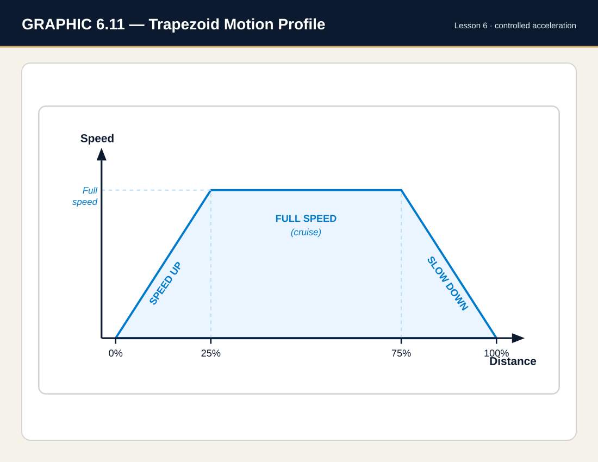
Real-world use: Industrial robots, CNC machines, and RoboCup champions all use trapezoidal (or S-curve) motion profiles!
🧩 THE TEMPLATE
Step 1: Declare the new function in RobotMotion.h, next to driveDistance() — the header is the promise:
/*
driveDistanceTrapezoidal()
--------------------------
Slow start -> fast cruise -> slow finish.
Same distance contract as driveDistance().
*/void driveDistanceTrapezoidal(float distanceCm);
Step 2: Implement it in RobotMotion.cpp, AFTER driveDistance(). It may call averageCounts() freely — that function is static to this very file, so you are on the right side of its door:
/*driveDistanceTrapezoidal(distanceCm)------------------------------------Slow start -> fast cruise -> slow finish.*/void driveDistanceTrapezoidal(float distanceCm) {
encoders.getCountsAndResetLeft();
encoders.getCountsAndResetRight();
int targetCounts = abs(distanceCm) * COUNTS_PER_CM;
int direction = (distanceCm > 0) ? 1 : -1;
int halfSpeed = DRIVE_SPEED / 2;
int fullSpeed = DRIVE_SPEED;
motors.setSpeeds(halfSpeed * direction + TRIM, halfSpeed * direction);
while (averageCounts() < targetCounts) {
long currentCounts = averageCounts();
float progress = (float)currentCounts / targetCounts;
int speed;
if (progress < ____) {
speed = _________; // Accelerating
} elseif (progress < ____) {
speed = _________; // Cruising
} else {
speed = _________; // Decelerating
}
motors.setSpeeds(speed * direction + TRIM, speed * direction);
delay(10);
}
motors.setSpeeds(0, 0);
}
Step 3: Test it! In loop() (in main.cpp), call your new function:
void loop() {
display.clear();
display.print(F("Trapezoid 60cm"));
driveDistanceTrapezoidal(60); // Use your pro-level version!
display.clear();
display.print(F("Done!"));
while(true) { }
}
Step 4: Watch carefully! You should see three distinct phases: slow start → fast middle → slow finish. This is competition-level motion control!
TIP
COMMON ERRORS
Integer division: Make sure progress is a float! If you use int, it will always be 0 until the very end.
Wrong comparison order: Check for <0.25 FIRST, then <0.75. If you check 0.75 first, the 0.25 condition will never trigger!
Implemented it but never declared it: if main.cpp says 'driveDistanceTrapezoidal' was not declared, the .cpp has the kitchen but the header never printed the menu. Step 1 first.
Forgot to multiply by direction: Without * direction, negative distances won't work.
🔓 Click to reveal solution
RobotMotion.h gets the declaration:
void driveDistanceTrapezoidal(float distanceCm);
RobotMotion.cpp gets the implementation, after driveDistance():
/*driveDistanceTrapezoidal(distanceCm)------------------------------------Slow start -> fast cruise -> slow finish.*/void driveDistanceTrapezoidal(float distanceCm) {
encoders.getCountsAndResetLeft();
encoders.getCountsAndResetRight();
int targetCounts = abs(distanceCm) * COUNTS_PER_CM;
int direction = (distanceCm > 0) ? 1 : -1;
int halfSpeed = DRIVE_SPEED / 2;
int fullSpeed = DRIVE_SPEED;
motors.setSpeeds(halfSpeed * direction + TRIM, halfSpeed * direction);
while (averageCounts() < targetCounts) {
long currentCounts = averageCounts();
float progress = (float)currentCounts / targetCounts;
int speed;
if (progress < 0.25) {
speed = halfSpeed; // Accelerating phase
} elseif (progress < 0.75) {
speed = fullSpeed; // Cruise phase
} else {
speed = halfSpeed; // Decelerating phase
}
motors.setSpeeds(speed * direction + TRIM, speed * direction);
delay(10);
}
motors.setSpeeds(0, 0);
}
Key concept: The trapezoidal profile balances speed with precision:
0-25%: Half speed prevents wheel slip at start
25-75%: Full speed for efficiency
75-100%: Half speed for accurate stopping
Competition tip: Adjust the percentages based on your surface. Slippery floors might need 0-35% acceleration and 65-100% deceleration!
Notice what just happened: nothing in main.cpp knows there is a motion profile. It ordered off the menu, and the kitchen handled the phases. That separation — not the trapezoid — is what this lesson taught you.
🏁 FINISHED EARLY?
Five multi-file experiments wait in Observation — you break it on purpose, predict what happens, then undo it: a missing guard, a broken promise, shuffled includes, a vanished file, and the one-number tune-up.
These are the nine objectives this lesson opened with, in Section 2 — the same list, now asked back. Tap each one you can honestly claim. All nine unlock the button.
☐ Explain the difference between a header file (.h) and an implementation file (.cpp)
☐ Explain the difference between a declaration (a promise) and a definition (keeping it)
☐ Use #include to connect files, and say when to use <angle brackets> and when to use "quotes"
☐ Use #pragma once and say what problem it does — and does not — solve
☐ Use extern to share one hardware object across eight files
☐ Split your Lesson 6 program into the eight-file architecture and keep it building green at every step
☐ Read a linker error and tell it apart from a compiler error
☐ Tune your whole robot by changing two numbers in RobotConfig.h
☐ Navigate a multi-file project in PlatformIO (tabs, Go to Definition, Peek)
TIP
Visual Learners: Draw Your Project!
On paper or a whiteboard, draw a diagram of your project's file structure showing:
Each file (RobotConfig.h, RobotMotion.h, RobotMotion.cpp, main.cpp)
Arrows showing which files #include which other files
What each file contains (constants, declarations, implementations, main program)
This visual map will help you understand how the pieces fit together!
BRAIN CHECK 03 · KNOWLEDGE CHECK — What You Just Built
Six questions about the project you just built. Answer each one, then click to compare. The section number after each question is where to re-read if you missed it.
1. What is the purpose of a header file (.h)? (§3.3)
🔓 Check your work — open after you’ve tried
A header file declares what exists (functions, constants) without providing the implementation. It's like a "menu" that tells other files what's available to use.
2. What is the difference between a function declaration and a function definition? (§8A.1)
🔓 Check your work — open after you’ve tried
Declaration: Says a function exists, describes its interface (name, parameters, return type) — ends with semicolon. Definition: Provides the actual code — has curly braces with implementation inside.
3. What does #pragma once do, and why do we need it? (§3.6)
🔓 Check your work — open after you’ve tried
#pragma once prevents a header file from being included multiple times, which would cause "multiple definition" errors. It tells the compiler: "Only include this content once." An older approach called "include guards" (#ifndef/#define/#endif) does the same thing but requires more code.
4. When should you use angle brackets <> vs. quotes "" in #include? (§3.5)
🔓 Check your work — open after you’ve tried
Angle brackets <>: System/library files (like <Zumo32U4.h>) Quotes "": Your own project files (like "RobotConfig.h")
5. In PlatformIO, which folder should contain .h files and which should contain .cpp files? (§3.8)
6. What error would you see if you forgot to #include "RobotMotion.h" but tried to call driveDistance(30)? (§8)
🔓 Check your work — open after you’ve tried
'driveDistance' was not declared in this scope — the compiler doesn't know the function exists without the #include.
BRAIN CHECK 04 · REFLECTION — In Your Notebook
No answers to reveal on these — they go in your notebook, and they feed the Software section of your TDP.
Your partner wants to add proximity-sensor code while you work on line following. Explain how the eight-file split lets you both work at once — name the files each of you touches, and the one file you both eventually edit.
Which of the eight files was hardest to decide about — where you genuinely had to stop and think “does this line go here or there?” Write down the line and the two files you were choosing between.
Section 3 called a header “a list of promises.” After building the project, is that a good description or a misleading one? Argue either side in three sentences.
What's Next?
In Lesson 8: Line Following with P-Control, you'll learn to:
Use proportional control (P-control) to follow a line
Calculate error and apply corrections
Tune the Kp constant for smooth tracking
Add sensor code to your organized project structure
Why Today's Work Matters
Because your code is now organized into modules, adding line following in Lesson 8 will be easy:
The line-sensor code goes straight into RobotSensors.h and RobotSensors.cpp — the pair you built today, same pattern
Your motion functions (driveDistance, turnDegrees) are ready to use
main.cpp stays clean — just add #include "RobotSensors.h"
This is the payoff of organization: adding new features becomes simple instead of scary!
Lesson 8 Preview: A New Challenge!
Lesson 8 introduces a new teaching approach: you'll write more of the code yourself!
We'll give you pseudocode (plain English logic) and a code skeleton. Your job is to translate the logic into working C++. Don't worry—you'll have plenty of guidance, and your organized code structure from today will make it much easier!
Draw the eight-file architecture. Which file owns what, and who calls whom. No source code — the TDP template forbids it outright and asks for diagrams instead. Why judges care: the TDP is 0.6 of your rubric score and architecture is its core. This is the highest-value entry in the book.
Break it on purpose — work in a spare copy of the finished build (Maker → CHALLENGES → any finished preload), because you'll be breaking things on purpose. Each one: predict, break, build, explain, undo. No robot needed for the first four.
Experiment 1: The Missing Guard
Delete the #pragma once line from RobotConfig.h. Predict: red or green? Build. Now add a second#include "RobotConfig.h" line to RobotMotion.cpp and build again. Explain both results.
💡 Hint
First build: green — each .cpp is compiled separately, and no single file included the header twice. Second build: red, redefinition — one file got two copies of every constant. The guard costs one line and makes double-include impossible; that's why it's the first line of every header.
Experiment 2: The Broken Promise
Comment out the extern Zumo32U4OLED display; line in RobotSensors.h. Before building, predict: which files go red, and with which Section 8 error?
💡 Hint
Every file that uses the display through the header — RobotHelpers.cpp, RobotMotion.cpp (if it prints), main.cpp — fails with 'display' was not declared in this scope (Error 1). RobotSensors.cpp stays happy: it has the real object. The promise wasn't the object — but the whole project was leaning on it.
Experiment 3: The Great Include Shuffle
In main.cpp, reverse the order of the four project includes — RobotMotion first, RobotConfig last. Predict: red or green?
💡 Hint
Green. Each header stands on its own: guards on top, and every header includes what it needs (RobotSensors.h pulls the Zumo library itself). Order-proof headers are a mark of good organization — if shuffling includes breaks a project, some header is secretly freeloading.
Experiment 4: The Vanished File
Rename RobotMotion.cpp to RobotMotion.txt (right-click → Rename). Predict the error — and trickier: is it a compiler error or a linker error? Build, check, rename it back.
💡 Hint
Undefined reference to 'driveDistance(float)' — a linker error (Error 4). PlatformIO only compiles .cpp files, so the .txt was silently skipped; every file still compiled fine on the header's promise. The linker was the one left holding an empty bag.
Experiment 5: The One-Number Tune-Up
Robot time. Run B (turn 90°) four times and note the total drift. Now change onlyWHEEL_BASE_MM in RobotConfig.h — up 3 if it undershoots, down 3 if it overshoots — rebuild, repeat. Count: how many files did you touch? How many behaviors changed?
💡 Hint
One file, one number — and every turn in every function, present and future, changed together. Before this lesson that tune-up meant hunting numbers through main.cpp. This is the whole payoff of RobotConfig.h, and it's how you'll calibrate robots for the rest of the course.
Telling the compiler "this function exists" — ends with a semicolon. Found in .h files.
Definition
The actual code that makes a function work — has curly braces. Found in .cpp files.
Header File (.h)
A file that declares what exists (functions, constants) without implementation code.
Implementation File (.cpp)
A file that contains the actual code for functions declared in a header.
Include Guard
An older technique (#ifndef/#define/#endif) that prevents a header from being included twice. Modern code uses #pragma once instead.
#pragma once
A compiler directive placed at the top of every header file that prevents it from being included twice. The modern standard, supported by all major compilers.
#include Directive
A command that copies the contents of another file into your code at that location.
Linker
The program that connects all your compiled files together into one executable.
Refactoring
Reorganizing existing code without changing what it does.
Battery Check
A startup routine that reads readBatteryMillivolts() and displays voltage with a three-tier status (GOOD/LOW/CHARGE!) before any other code runs.
Every figure in this lesson, live or still to come.
Placeholder
Description
Type
Status
[IMAGE 7.1]
Messy pile vs. organized shelves — same parts, every one with a place to live
Photo
✅ in the lesson
[IMAGE 7.3]
PlatformIO project folder structure in VS Code Explorer panel
Photo / screenshot
☐ still needed
[IMAGE 7.8]
VS Code tab bar showing multiple open files
Diagram (SVG)
✅ in the lesson
[IMAGE 7.9]
Error message showing 'was not declared in this scope'
Diagram (SVG)
✅ in the lesson
[IMAGE 7.10]
Error showing multiple definition
Diagram (SVG)
✅ in the lesson
[IMAGE 7.11]
The compiler cannot find a header — fatal error: No such file or directory
Diagram (SVG)
✅ in the lesson
[IMAGE 7.12]
Right-click menu showing the Go to Definition option
Diagram (SVG)
✅ in the lesson
IMAGE 7.13
Retired — the final project structure is already live as GRAPHIC 7.15 (the project tree) and GRAPHIC 7.16 (the eight-file architecture)
—
✅ in the lesson
[GRAPHIC 7.2]
The menu and the kitchen: what a header promises vs. what a .cpp does
Diagram (SVG)
✅ in the lesson
[GRAPHIC 7.4]
How the files connect: main.cpp → header → .cpp, and never main → .cpp
Diagram (SVG)
✅ in the lesson
[GRAPHIC 7.14]
The build process: compile each .cpp, then link them into one program
Diagram (SVG)
✅ in the lesson
[GRAPHIC 7.15]
The PlatformIO project tree — what belongs in include/ and what belongs in src/
Diagram (SVG)
✅ in the lesson
[GRAPHIC 7.16]
The eight-file architecture, and which file includes which
Diagram (SVG)
✅ in the lesson
[GRAPHIC 6.11]
The trapezoidal motion profile: slow start, fast cruise, slow finish (travels with Challenge 7, moved here from Lesson 6)
Diagram (SVG)
✅ in the lesson
Curious how any of this actually works?
The Going Deeper page opens up why this lesson's eight files exist at all — what a translation unit is, why the compiler genuinely cannot see one file from another, and what a header is really promising when you write extern. None of it is assigned, and none of it is on a quiz — it is there for when you want it. Open Going Deeper →
 NOTE
NOTE Best Practice: Naming Conventions
Best Practice: Naming Conventions KEY TERM: Header Files (.h)
KEY TERM: Header Files (.h) WARNING
WARNING LEARN: The Backpack Analogy
LEARN: The Backpack Analogy DO THIS NOW — Start a New Lesson (same ritual as always)
DO THIS NOW — Start a New Lesson (same ritual as always) Header vs Implementation
Header vs Implementation BRAIN CHECK 01 · MENTAL KNOWLEDGE CHECK — Answer From Your Head
BRAIN CHECK 01 · MENTAL KNOWLEDGE CHECK — Answer From Your Head Fell behind? File wrecked? The Maker has your back.
Fell behind? File wrecked? The Maker has your back. CHECKPOINT
CHECKPOINT THE GOAL
THE GOAL MY PLAN — yours, before any code
MY PLAN — yours, before any code Lesson 8 Preview: A New Challenge!
Lesson 8 Preview: A New Challenge! ENGINEER’S LOG #07 — feeds: Software (general architecture)
ENGINEER’S LOG #07 — feeds: Software (general architecture) Curious how any of this actually works?
Curious how any of this actually works?